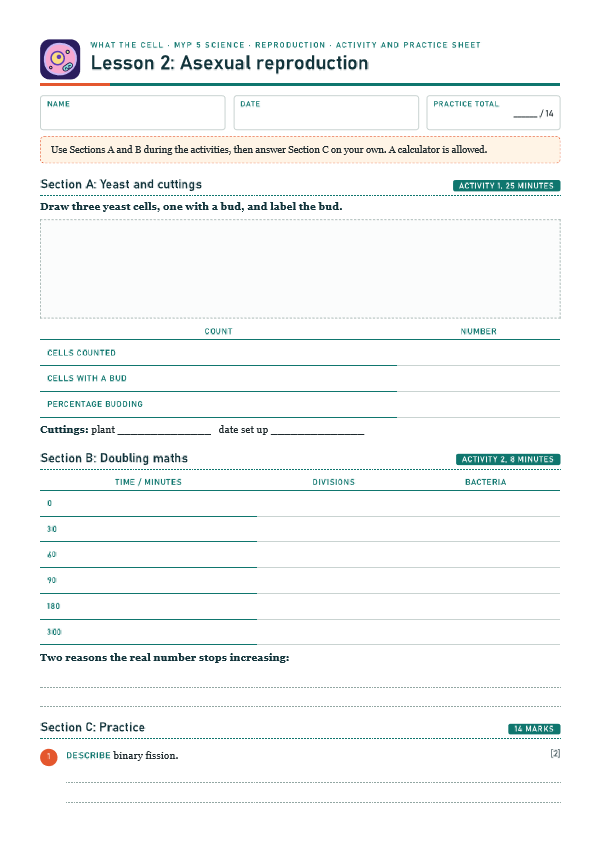

By the end of the lesson you can
- Describe binary fission, budding, fragmentation and spores
- Describe vegetative propagation in plants
- Calculate population size after repeated doubling
- Observe and draw budding yeast cells
Keys: arrows or a presentation clicker move the slides, F for full screen. Slides with a red dot have a video or simulation.
Videos (all 5 minutes or less)
- 2:20
Binary fission in bacteria
Lumina Learning. While you watch: What is copied before the cell divides? Slide 7.
- 2:58
Asexual reproduction
MooMooMath and Science. While you watch: Name four types of asexual reproduction. Slide 13.
Simulations
- Lab
- Lab
Print and practise

Activity and practice sheet
Used in the lesson’s activities, with practice questions. Your teacher has the answers.
Download (PDF)Lesson 2 slides
All 24 slides in one file, to read again or print. The video buttons on the slides open YouTube.
Download the slides (PDF)Revising? The Revision tab on the unit page has the unit notes and review.
Notes: Asexual reproduction
mitosis
Cell division that makes two new cells with exactly the same DNA as the first cell. For example: how a cut on your skin heals.
binary fission
One cell copies its DNA and splits into two identical cells. The parent cell no longer exists: it becomes the two offspring.. For example: bacteria, paramecium.
generation time
The time it takes a population to double. For example: about 20 minutes for some bacteria.
budding
A small outgrowth (a bud) grows on the parent, gets a copy of the DNA, and breaks off as a new organism. The parent survives.. For example: yeast, hydra.
fragmentation
The body breaks into pieces and each piece grows into a whole new organism. For example: a planarian cut in two becomes two worms.
regeneration
Regrowing a lost or damaged part. It becomes reproduction when a piece grows a whole new body.. For example: a starfish arm with part of the centre.
spore
A single cell made in huge numbers that can grow into a new organism. Light enough to be carried by air or water.. For example: bread mould, mushrooms, ferns.
vegetative propagation
A new plant grows from part of the parent's stem, root, leaf or bud, with no seeds or flowers. For example: cassava grown from stem cuttings.
Key words
| binary fission | one cell splitting into two identical cells |
|---|---|
| budding | a small outgrowth that becomes a new organism; the parent survives |
| fragmentation | a piece of the body grows into a new organism |
| spore | a single cell that can grow into a new organism |
| vegetative propagation | new plants growing from a stem, root or leaf of one parent |
| generation time | the time a population takes to double |
| mitosis | cell division that copies DNA exactly |